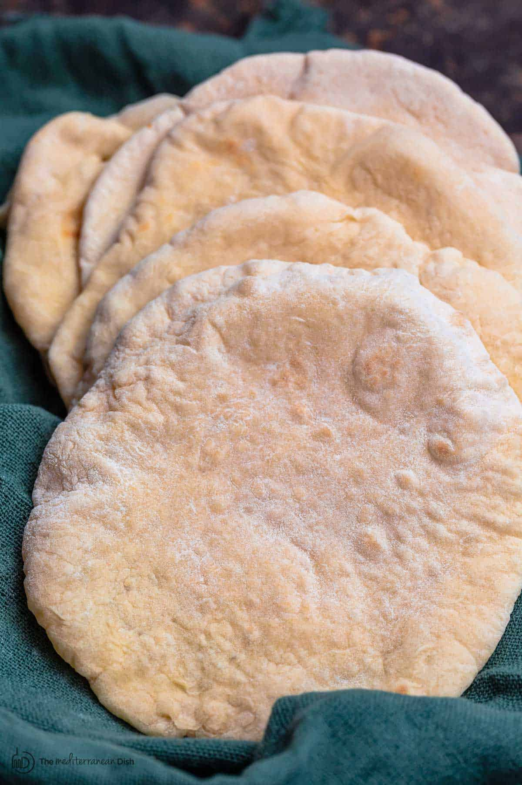

Home made pita bread

| Ingredient |
Amount |
| lukewarm water |
1 cup |
| flour |
1 cup |
| yeast |
30g |
| salt |
1 teaspoon |
| sugar |
2 teaspoon |
- Combine lukewarm water in a large mixing bowl with yeast and sugar. Stir until dissolved. Add 1/2 flour and whisk together. Place the mixing bowl in a warm (not hot) place, uncovered. Wait about 15 minutes or until mixture is frothy and bubbling a bit.
- Now add salt, olive oil, and the remaining flour (keep about ½ cup of the flour for dusting later). Stir until mixture forms a shaggy mass.
- Dust a clean working surface with just a little bit of flour. Knead lightly for 2 minutes or so until smooth. Cover and let the dough rest for 10 minutes, then knead again for a couple more minutes. The dough should be soft and a little bit moist, you can help it with a little dusting flour, but try not to add too much.
- Clean the mixing bowl and give it a light coating of extra virgin olive oil. Put the dough back in the bowl and turn it a couple times just to coat it a bit with the olive oil. Cover the mixing bowl tightly with plastic wrap, then cover it with a kitchen towel. Put the bowl in a warm (not hot) place. Leave it for 1 hour or until the dough rises to double its size.
- Divide the dough. Gently deflate the dough and place it on a clean work surface. Divide the dough into 7 to 8 equal pieces and shape them into balls. Cover with a towel and leave them for 10 minutes or so.